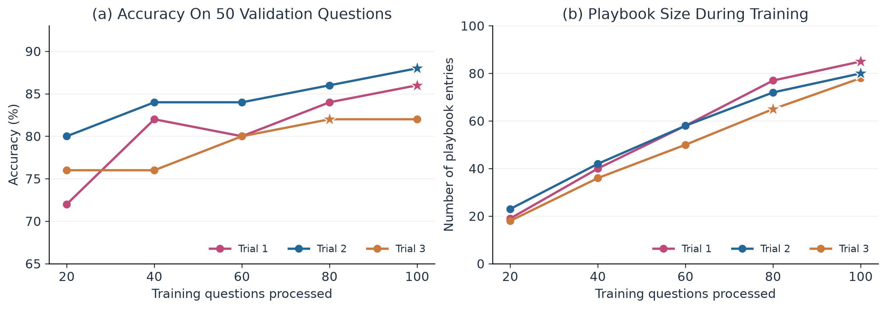
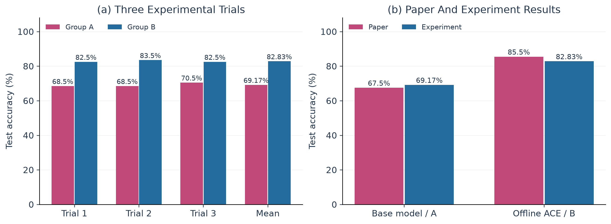
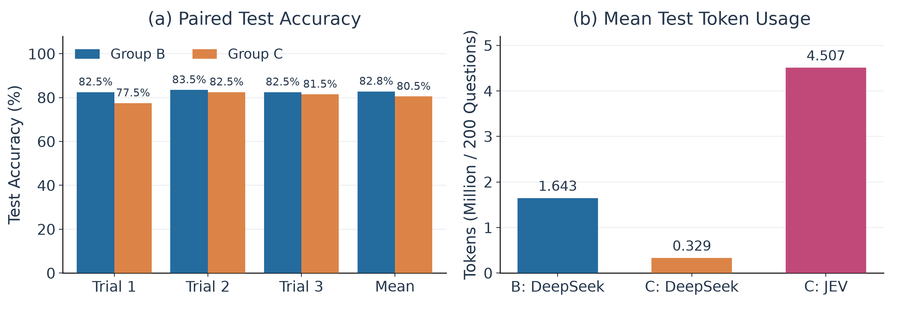
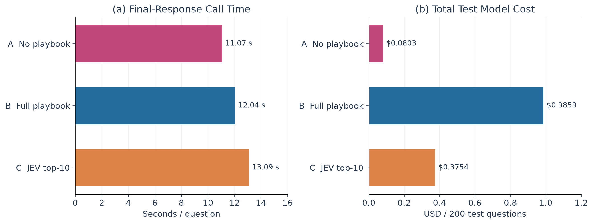

Reproducing and Improving ACE
Formula Financial Reasoning with JEV Context Selection
Yiwei Wan1155261963
01 · Method
How ACE Learns
Generator
Answer with the
current playbook
→
Reflector
Use training feedback
to extract lessons
→
Curator
Add reusable entries
to the playbook
Updated Playbook → Next Question
One ModelThree Role PromptsUp to 3 Reflection / Retry Rounds
02 · Setup
Model and Data
DeepSeek-V3.1-Terminus
temperature = 0
Thinking disabled
Maximum output: 4,096 tokens
Controlled Comparison
50 formula categories
Same samples and question order
3 trials per group
02 · Setup
Three Experimental Groups
A
Empty Playbook
Answer test questions directly.
No learningB
Full Playbook
Learn from an empty playbook.
100 training questions · 1 epochC
JEV Top-10
Reuse the matching B playbook.
No new trainingTrain B→Validate Every 20 Steps→Select Best Playbook→Test B / C
03 · Validation
Validation Selects the Playbook

04 · Reproduction
Reproducing the Accuracy Gain
+13.67 ppA: 69.17% → B: 82.83%
−2.67 ppPaper ACE: 85.5% → B: 82.83%

05 · Modification
JEV Score Top-10
Question
+ B Playbook
→
→
→
Generator
Answers
1General or
topical reminder
2Useful for a
supporting step
3Core formula or
key calculation
06 · Modification Results
Accuracy and Context After Filtering
−2.33 ppTest Accuracy: B → C
−79.96%DeepSeek Token Usage

06 · Modification Results
Time and Test Cost
+1.05 sMean API Time / Question: C vs B
61.92%Lower Total Test Cost: C vs B

07 · Conclusions
Learn Experience. Retrieve Selectively.
01Playbooks Improve Accuracy
Full ACE: 69.17% → 82.83%
02Selection Reduces Test Cost
JEV top-10: $0.9859 → $0.3754
03Choose the Trade-Off
80.50% accuracy with a smaller DeepSeek context
08 · Discussion
Limitations and Next Steps
Current LimitationNext Step
Different Model and SettingsTerminus, prompts, and training rounds
→Align the Original SetupCheck whether the trend remains
Smaller Learning Sets100 training / 50 validation questions
→Expand the DataTest stability at a larger scale
Only Fixed Top-10No random or keyword baseline
→Compare Selection MethodsChoose k on the validation set